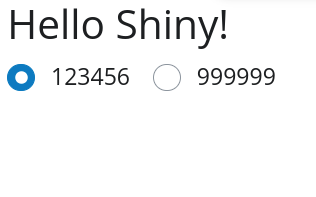
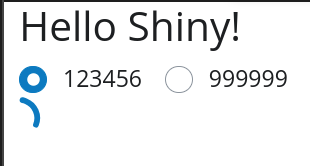
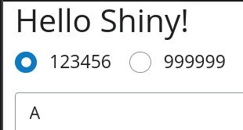
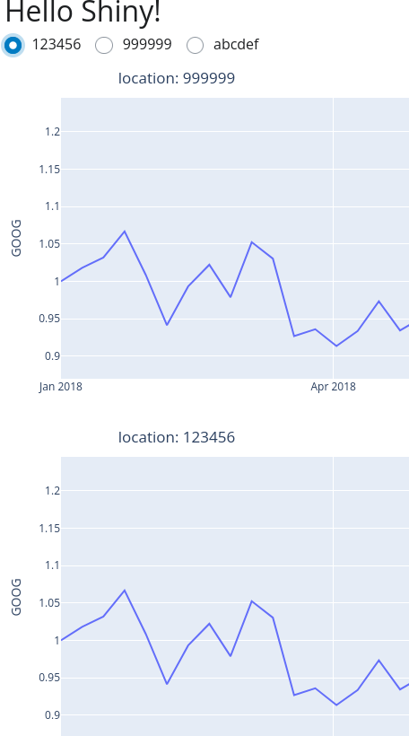

Background
I am trying to port a dashboard I built last year from Solara to Shiny for Python. The dashboard has several conditional UI elements that are based on user input, namely a point of interest geolocated where we may have some calibration data, in which case two time series plots will be displayed.
I recally having to battle a few things to figure out how to do this in Solara. Looking back at the code I wrote last year, it is now rather pleasing to read, to be fair.

I do recall scratching my head a bit to have conditional UI with solara, but that was not the trickiest bit I wrestled with, and a function with standard python conditional statements worked beautifully:
@solara.component
def CalValPlots():
global _model_version
with solara.VBox() as cvplots:
model_version = _model_version
station_id = selected_station_id.value
if station_id is None:
solara.Info("Select a station to view calibration plots")
elif series_db.has_station(station_id):
solara.Markdown(f"Last selected station: **{station_id}**. _air2stream_ model version {model_version}")
calval_choice = "calib"
for calval_choice in ["calib", "valid"]:
fig = cplot.obs_mod_plot(model_version, station_id, calval_choice)
solara.FigurePlotly(
fig #, dependencies=[selected_station_id]
)
else:
solara.Info(f"Station {station_id} is not calibrated")
return cvplotsBe it as it may, I need to port some features to shiny for python. I am actually having a harder time than anticipated to replicate this conditional UI feature. This post is a step by step attempt to get the behavior I want.
Context and goals
I started the new 2025 project with the “express” syntax of shiny for python, but encountered an issue previously and am now using the ‘core’ syntax instead.
Relevant pointers
Relevant bits I scouted:
- shiny-for-python-clean-design-for-dynamic-plot-management
- shiny modules doc
- plotly plots example
- “Conditionally show Nav_panel content” on shiny Discord
https://shiny.posit.co/py/templates/ so far as I can tell does not include conditional UI examples, at the time of writing this. The github repo for these templates is at posit-dev/py-shiny-templates..
Goal of this post
Minimal example to replicate conditional UI in Shiny for Python using the shiny ‘core’ syntax.
- Radio buttons to select between two options
- This option will update a background reactive value.
- Based on this value, the UI should change dynamically.
- in one case, a text saying “sorry”, no data
- in another case, two time series plots appear. They should be such that code is modularized, not a copy/paste job.
The companion repo for this post is jmp75/shiny-conditional-plots. Commits are roughly as per the steps below.
Creating an envinronment and installing dependencies
cd ~/src/shiny-conditional-plots
uv venv --python 3.11
source .venv/bin/activate
uv pip install shiny shinywidgetsSteps
One issue I had was to make sense of the various bits of info gleaned and the interplay between shiny modules, rendering, decorators, and reactive values. Let’s break things down and tackle each aspect one by one.
Step 1 minimal starting point
shiny create? Which template would you like to use? Basic app
… Creating Basic app Shiny app...
? Enter destination directory: ./basic-app
? Would you like to use Shiny Express? (Use arrow keys)
Yes
» No
← Back
[Cancel]We are starting from:
from shiny import App, render, ui
app_ui = ui.page_fluid(
ui.panel_title("Hello Shiny!"),
ui.input_slider("n", "N", 0, 100, 20),
ui.output_text_verbatim("txt"),
)
def server(input, output, session):
@render.text
def txt():
return f"n*2 is {input.n() * 2}"
app = App(app_ui, server)Step 3: Different components are displayed based on the selected station
I got to bark up the wrong tree here, mis-using ui.output_text. Kept for the record, but you can skip to step 4…
Above, the output text is updated based on the selected radio button. Now, let’s display different components based on the selected station. For example, if “1234456” is selected, show a text output; if “999999” is selected, show a text output distinctly different. We’ll more on to plotly later on. .
Initially I looked at ui.panel_conditional.html but the page advises to look instead at render.ui which is slower but more flexible. The sample code at the time of writing is a bit disappointing, as it shows only how to add some UI elements, rather than a toggle between them.
We add an ui.output_ui("toggled_controls"), in the app_ui, and in the server function:
@render.ui
def toggled_controls():
location = _current_location_rv.get()
if location is None:
return ui.TagList(
ui.output_text("location_known", "Location is None - no UI")
)
elif location == "123456":
return ui.TagList(
ui.output_text("location_123456", "hard coded control for 123456")
)
elif location == "999999":
return ui.TagList(
ui.output_text("location_999999", "hard coded control for 999999")
)
else:
return ui.TagList(
ui.output_text("whats_that", "Unexpected station ID")
)However if I do that, the UI does not update as expected. I can toggle the radiobutton back and forth but the bit where I expect output texts displays a “spinning wheel” instead of the text.
what’s wrong?
If I look at examples of usages of @render.ui in the codebase https://github.com/posit-dev/py-shiny-templates, I am not helped. Actually, I don’t get why they are using @render.ui at all and not @render.text instead in the examples such as:
@render.ui
def total_tippers():
return tips_data().shape[0]Googling, I come across this post understanding-reactivity-in-pyshiny which uses the @output decorator
# Always update this output when the number is updated
@output
@render.ui
def number():
return val.get()so, trying:
@output
@render.ui
def toggled_controls():unfortunately, no improvements in my case.
Trying to reintroduce ui.panel_conditional, which I see used in the last example in the post understanding-reactivity-in-pyshiny?
@output
@render.ui
def toggled_controls():
location = str(_current_location_rv.get())
condipanel = ui.panel_conditional(
f"{location} === '123456'",ui.output_text("location_123456", "hard coded control for 123456"),
)Nope, still nothing. At least there is no spinning wheel

Wait, I get it, am not a javascript person but get a hunch that f"{location} === '123456'" should be f"'{location}' === '123456'"
In that case, indeed there is nothing if ‘999999’ is selected. But then I get the spinning wheel if ‘123456’ is selected:

On a second, complete hunch, trying to conditionally show another ui element, ui.input_select.
@output
@render.ui
def toggled_controls():
location = str(_current_location_rv.get())
condipanel = ui.panel_conditional(
f"{location} === 123456",
ui.input_select("select", None, ["A", "B", "C"]),
# ui.output_text("location_123456", "hard coded control for 123456"),
)
return condipanelTo my surprise, it finally works as expected.

I misunderstood the way ui.output_text and related are to be used.
Step 4: different output texts UI conditional on reactive value
repo at v0.4 ended up with a minimal demo that works as expected:
def server(input, output, session):
_current_location_rv = reactive.value(None)
@reactive.effect
@reactive.event(input.station_id_rb)
def update_selected_station():
selected_station = input.station_id_rb()
_current_location_rv.set(selected_station)
@render.ui
def toggled_controls():
location = str(_current_location_rv.get())
if location is None:
return ui.TagList(
ui.output_text("location_unknown")
)
elif location == "123456":
return ui.TagList(
ui.output_text("location_123456")
)
elif location == "999999":
return ui.TagList(
ui.output_text("location_999999")
)
else:
return ui.TagList(
ui.output_text("whats_that")
)
@render.text
def location_unknown(): return "location_unknown"
@render.text
def location_123456(): return "location is 123456"
@render.text
def location_999999(): return "location is 999999"
@render.text
def whats_that(): return "Unexpected location!"Step 5: display several plotly graphs depending on location
For my use case, I have to display two plotly time series graphs when a location is selected. The post shiny-for-python-clean-design-for-dynamic-plot-management shows how to display dynamically a variable number of plots. At the first read fo the code using modules on top of functions, unless you are already advanced with shiny for python, you’d think it cannot possibly work (functions called yet with missing input arguments). Actually, if you try, it does work!
Static definition of two graphs as outputs
@render.ui
def toggled_controls():
location = _current_location_rv.get()
if location is None:
return ui.TagList(
ui.output_text("location_unknown")
)
else:
return ui.TagList(
ui.output_ui("first_graph"),
ui.output_ui("second_graph")
)
@render_widget
def first_graph():
df = px.data.stocks()
fig = px.line(df, x='date', y="GOOG")
return fig
@render_widget
def second_graph():
df = px.data.stocks()
fig = px.line(df, x='date', y="AAPL")
return figError on client while running Shiny app
Cannot read properties of undefined (reading 'replace')After a bit of thinking I realised that it was because neither ui.output_ui nor ui.output_plot is suitable, but one should use shinywidget’s output_widget as a tag child to return:
from shinywidgets import output_widget, render_widget
# etc
@render.ui
def toggled_controls():
location = _current_location_rv.get()
if location is None:
return ui.TagList(
ui.output_text("location_unknown")
)
else:
return ui.TagList(
output_widget("first_graph"),
output_widget("second_graph")
)
@render_widget
def first_graph():
df = px.data.stocks()
fig = px.line(df, x='date', y="GOOG")
return fig
@render_widget
def second_graph():
df = px.data.stocks()
fig = px.line(df, x='date', y="AAPL")
return figThis seems to work as expected. Transposing to my “real” use case, I bumped into an issue were graphs seemed to be padded rather than overriding, when changing of selected location. After a bit of thinking I got to try to add a statement accessing the server reactive value _current_location_rv, as follows:
@render_widget
def first_graph():
location = _current_location_rv.get()
df = px.data.stocks()
fig = px.line(df, x='date', y="GOOG")
return figTo my surprise, this led to a display where there were two “GOOG” time series graphs, and one “AAPL”.
Checkpoint for the repo at v0.5.
Dynamic definition of two graphs as outputs
first_graph and second_graph are short, but similar. While the use cases is not screaming for a fully dynamic conditional display, let’s see if shiny modules. Besides, this may help overcome my issue with duplicated graphs in my real use case.
# Adapting https://www.appsilon.com/post/shiny-for-python-clean-design-for-dynamic-plot-management
@module.ui
def plot_ui(stock_ticker:str, location:str) -> ui.TagChild:
return output_widget("plot")
@module.server
def plotly_stock_server(input, output, session, stock_ticker:str, location:str):
@render_widget # https://shiny.posit.co/py/components/outputs/plot-plotly/
def plot() -> Any:
df = px.data.stocks()
fig = px.line(df, x='date', y=stock_ticker)
return fig
def server(input, output, session):
_current_location_rv = reactive.value(None)
@reactive.effect
@reactive.event(input.station_id_rb)
def update_selected_station():
selected_station = input.station_id_rb()
_current_location_rv.set(selected_station)
@render.ui
def toggled_controls():
location = _current_location_rv.get()
if location is None:
return ui.TagList(
ui.output_text("location_unknown")
)
else:
location=str(location)
stock_tickers = ['GOOG','AAPL']
for s in stock_tickers:
plotly_stock_server(f"plot_{s}", s)
tag_children=[plot_ui(f"plot_{s}", s) for s in stock_tickers]
return ui.TagList(tag_children)If I change of location, I get 4 plots rather than two; two goog and too aapl plots stacked vertically.
The generated time series plots are identical for each location; let us display the location info in the title to see if we get insight:
# Adapting https://www.appsilon.com/post/shiny-for-python-clean-design-for-dynamic-plot-management
@module.ui
def plot_ui(stock_ticker:str, location:str) -> ui.TagChild:
return output_widget("plot")
@module.server
def plotly_stock_server(input, output, session, stock_ticker:str, location:str):
@render_widget # https://shiny.posit.co/py/components/outputs/plot-plotly/
def plot() -> Any:
df = px.data.stocks()
fig = px.line(df, x='date', y=stock_ticker, title=f"location: {location}")
return fig
def server(input, output, session):
_current_location_rv = reactive.value(None)
@reactive.effect
@reactive.event(input.station_id_rb)
def update_selected_station():
selected_station = input.station_id_rb()
_current_location_rv.set(selected_station)
@render.ui
def toggled_controls():
location = _current_location_rv.get()
if location is None:
return ui.TagList(
ui.output_text("location_unknown")
)
else:
location=str(location)
stock_tickers = ['GOOG','AAPL']
for s in stock_tickers:
plotly_stock_server(f"plot_{s}", s, location)
tag_children=[plot_ui(f"plot_{s}", s, location) for s in stock_tickers]
return ui.TagList(tag_children)Curiously, the output is such that graphs are generated for the currently selected, and penultimate selected, locations!

Checkpoint for the repo at v0.5.1.
Conclusion
- Better handle on the generation of conditional UI, using
@render.ui - Using reactive values as a dependency for UI update rather than UI checkbox or similar as per the typical examples given in the shiny doc
- Rendering plotly graphs statically.
- Rendering plotly graphs dynamically, using
moduleto try to modularize code, leads to duplicated output graphs. I am a bit puzzled why this happens.